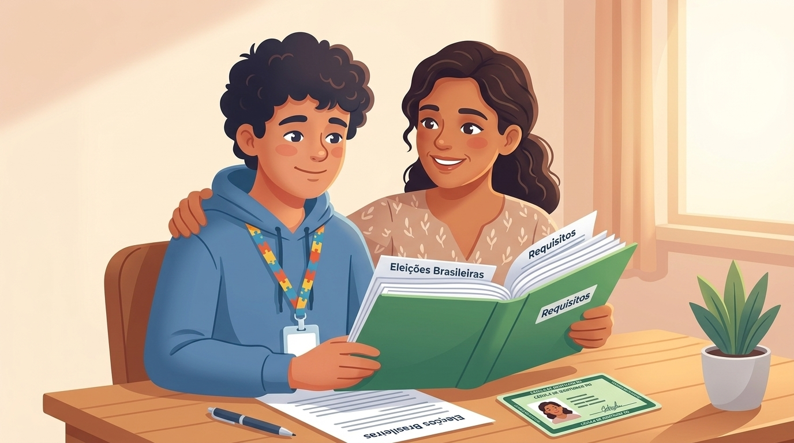
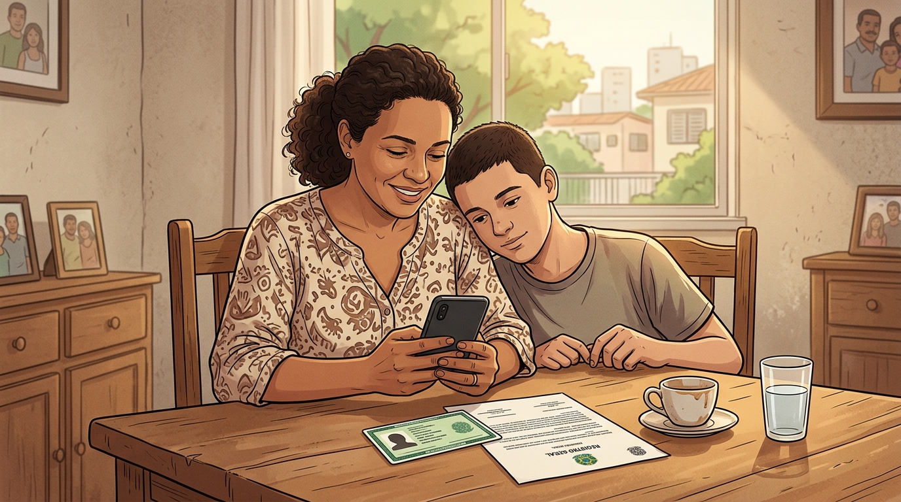

Direito ao voto
A pessoa autista tem pleno direito de votar. A legislação eleitoral assegura medidas de acessibilidade e prioridade adequadas às suas necessidades.
Saiba maisOrientações práticas para pessoas autistas, familiares e representantes sobre direitos, acessibilidade e participação política
A participação na vida pública e política é um direito garantido por lei. Este guia reúne orientações práticas sobre o exercício do voto, recursos de acessibilidade nas seções eleitorais, possibilidades de dispensa de penalidades por impossibilidade ou dificuldade excessiva de votar (Art. 15 da Resolução TSE nº 23.659/2021) e procedimentos para registro de deficiência junto ao Cartório Eleitoral.
Importante: O diagnóstico de TEA não retira o direito ao voto nem gera, por si só, dispensa automática das obrigações eleitorais.
Saiba como garantir atendimento prioritário e apoio na sua seção eleitoral.
Entenda como solicitar formalmente a dispensa de penalidades por ausência perante o Juiz Eleitoral.
Veja como solicitar a anotação da deficiência no Cadastro Eleitoral para garantir recursos de acessibilidade.
Saiba como identificar a causa junto ao cartório e regularizar sua situação.
O que você precisa saber sobre cidadania, acessibilidade e participação política das pessoas no espectro autista.
A pessoa autista tem pleno direito de votar. A legislação eleitoral assegura medidas de acessibilidade e prioridade adequadas às suas necessidades.
Saiba maisQuando o comparecimento for impossível ou demasiadamente oneroso, é possível solicitar a isenção de sanções legais ao Juiz Eleitoral (Art. 15 da Res. TSE nº 23.659/2021).
Saiba maisA anotação no Cadastro Eleitoral perante o cartório assegura preferências, facilidade de acesso à cabine e auxílio de acompanhante.
Saiba maisUma pendência eleitoral não cancela automaticamente o CPF nem bloqueia o BPC/LOAS. Veja as regras específicas para passaporte e posse em concursos.
Saiba maisA legislação garante que pessoas no espectro autista possam exercer seu direito ao voto com dignidade, respeito ao seu ritmo e proteção contra sobrecarga sensorial:
Passo a passo resumido para identificar sua situação e formalizar solicitações perante a Justiça Eleitoral competente.
Verifique se o objetivo é votar com apoio, registrar necessidade de acessibilidade, requerer isenção de faltas ou regularizar pendências.
Separe documento oficial de identificação, autodeclaração de deficiência ou documentação médica comprobatória e documento de representação, se houver.
Encaminhe o requerimento ao Cartório da sua Zona Eleitoral pelos canais de atendimento presenciais ou eletrônicos (Autoatendimento do Eleitor).
O Cartório processará o pedido e, quando envolver decisão judicial, o(a) Juiz(a) Eleitoral emitirá a decisão e certidão competente.
Famílias e responsáveis desempenham um papel essencial no apoio à cidadania da pessoa com TEA. O sistema eleitoral brasileiro prevê procedimentos acessíveis:

Identifique rapidamente o procedimento e modelo correto para o seu caso. Suas respostas são processadas exclusivamente no seu navegador e não são transmitidas para nenhum servidor externo.
O art. 15 da Resolução TSE nº 23.659/2021 estabelece as regras claras para pessoas com deficiência quando o cumprimento das obrigações eleitorais for impossível ou demasiadamente oneroso.
Relate as barreiras sensoriais, de comunicação, comportamentais ou de locomoção que tornam o ato penoso. A autodeclaração e descrição fática são essenciais e podem ser complementadas por laudos.
Com a decisão do juiz eleitoral deferida, o cartório anota no cadastro o código específico (ASE de isenção de sanções legais por ausência), dispensando justificativas futuras.
A pessoa que não possuir inscrição poderá obter junto ao juízo competente a Certidão de Quitação Eleitoral com prazo de validade indeterminado.
Não é preciso processo de interdição civil. A Lei Brasileira de Inclusão (Lei 13.146/2015) assegura plena capacidade civil às pessoas autistas.
O atendimento nos cartórios eleitorais é preparado para receber requerimentos de pessoas com deficiência com urbanidade, respeito e celeridade:
Informações precisas sobre as consequências de faltas e pendências eleitorais.
O CPF não é cancelado por faltas eleitorais. A Receita Federal possui cadastro autônomo. O documento que pode ser cancelado após 3 eleições consecutivas sem justificativa é o Título de Eleitor, o que o Art. 15 previne.
Portal da Receita ↗A ausência nas urnas não cancela o BPC. O benefício assistencial é regido por critérios de renda e CadÚnico do Ministério do Desenvolvimento Social / INSS.
Portal do INSS ↗A Polícia Federal exige certidão de quitação eleitoral para maiores de 18 anos. A certidão por prazo indeterminado (Art. 15, § 3º) supre integralmente essa exigência.
Polícia Federal ↗Universidades e órgãos públicos exigem quitação. A decisão judicial de isenção de sanções ou a certidão do art. 15 atende perfeitamente a esse requisito.
Autoatendimento TSE ↗Muitas famílias temem que a ausência às urnas resulte no cancelamento de auxílios assistenciais ou documentos essenciais. É fundamental desmistificar esses receios:

Preencha os dados abaixo. O documento é gerado dinamicamente em tempo real na tela. Você pode imprimi-lo diretamente em folha A4 ou copiá-lo para protocolar perante o cartório eleitoral.
Respostas diretas e esclarecedoras para as dúvidas mais comuns de famílias e eleitores autistas.
Não. O diagnóstico, por si só, não cancela nem dispensa automaticamente nenhuma obrigação eleitoral. É necessário formular o pedido previsto no Art. 15 da Resolução TSE nº 23.659/2021 perante o juízo eleitoral, demonstrando que o cumprimento do dever é impossível ou demasiadamente oneroso para a pessoa.
De forma alguma! A isenção afasta apenas as multas e sanções pelo não comparecimento. Caso a pessoa se sinta disposta e queira votar em qualquer pleito futuro, seu direito de votar permanece intacto.
O texto normativo do Art. 15 do TSE prevê autodeclaração da pessoa com deficiência ou de seu representante, além de documentação comprobatória disponível. Laudos, relatórios multidisciplinares ou Carteira de Identificação da Pessoa com TEA (Ciptea) são muito úteis para subsidiar a decisão do juiz eleitoral.
Não. O voto é estritamente pessoal e secreto. Uma pessoa de confiança de escolha do eleitor pode entrar na cabine para auxiliá-lo mecanicamente (por exemplo, alcançando o teclado), mas jamais substituir a vontade do cidadão.
Pessoas com TEA e seus acompanhantes têm direito legal a atendimento prioritário (Lei 12.764/2012 e Lei 14.626/2023). Além disso, até os prazos de fechamento do cadastro eleitoral, é possível solicitar transferência para uma seção eleitoral com acessibilidade física e menor ruído perante o cartório.
A ausência à eleição não suspende nem cancela o Benefício de Prestação Continuada (BPC/LOAS). O benefício segue critérios da Lei Orgânica da Assistência Social. Pendências eleitorais não geram bloqueio bancário de benefícios previdenciários ou assistenciais.
Se o título foi cancelado por ausência em três turnos consecutivos sem justificativa, o interessado deve solicitar no cartório a regularização ou a certidão de quitação pelo art. 15, regularizando sua situação.
Consulte diretamente os textos normativos originais nos portais governamentais competentes.
Transparência total sobre o tratamento de informações, a regra de guarda temporária por 180 dias das mensagens enviadas ao assistente para aprimoramento pedagógico e seus direitos como titular conforme a Lei Federal nº 13.709/2018.
Iniciativa comunitária sem fins lucrativos. Não comercializamos dados, não exibimos anúncios e não compartilhamos registros com terceiros para fins publicitários ou comerciais.
As mensagens e dúvidas enviadas ao Guia Virtual são armazenadas de forma anônima por 180 dias para fins exclusivos de auditoria pedagógica e expansão do conteúdo informativo, mesmo se você recusar cookies.
Os dados preenchidos no Gerador de Requerimento (nome, CPF, título) são mantidos estritamente na memória do seu próprio navegador (localStorage) e jamais são transmitidos a servidores externos.
Você pode consultar informações tratadas, revogar consentimentos opcionais ou tirar dúvidas com o Encarregado de Dados pelo e-mail rkvasne@gmail.com (Art. 18 da LGPD).
O uso do atendente virtual é facultativo e voluntário. Ao submeter uma pergunta, a retenção temporária do texto por 180 dias decorre diretamente da execução de serviço solicitado a pedido do próprio titular (Art. 7º, V da LGPD) e do legítimo interesse na calibração e aprimoramento pedagógico do portal (Art. 7º, IX da LGPD). As perguntas são armazenadas de forma dissociada de qualquer documento ou identidade civil. Aviso preventivo: nunca digite senhas, dados bancários, números de benefícios ou relatórios médicos sigilosos na caixa de diálogo do assistente.